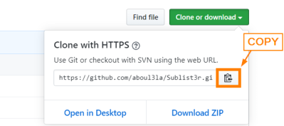

install software
Install with git from Github1. Go to the GitHub repository
2. Copy the .git url
3. In the bash terminal change the folder where we want to install the software
example: 4. Clone the software here:
example: git clone https://github.com/aboul3la/Sublist3r.git
7. If present follow the instructions in the file .md
8. setup
◇ with pip
cd Sublist3r
pip install .
◇ using 'setup.py' nor 'pyproject.toml'
Install with wget from Githubexample of one line to install
BeRoot kali@kali:~/$ mkdir /home/$USER/bin; wget https://github.com/AlessandroZ/BeRoot/archive/master.zip -P /home/$USER/bin; unzip -d /home/$USER/bin /home/$USER/bin/master.zip; rm /home/$USER/bin/master.zip; cd /home/$USER/bin/BeRoot-master/Linux/;python beroot.py